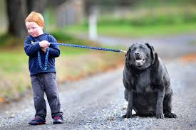
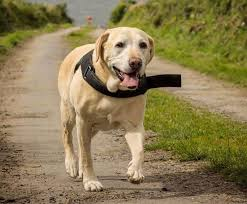
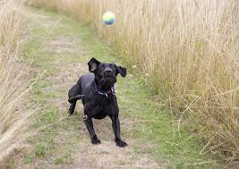

This list of Labrador Retrievers covers notable individual dogs that belong to this breed. The Labrador retriever is the most popular breed of dog (by registered ownership) in both the United States and the United Kingdom. The breed is exceptionally affable, intelligent, energetic and good natured, making them excellent and popular pets, companions and working dogs. They have a high work ethic[1] Common working roles for Labradors include: hunting, tracking and detection, disabled-assistance, carting, and therapy work. Approximately 60–70% of all guide dogs in the United States are Labradors.
As both the most popular breed by registered ownership and also the most popular breed for service dogs in several countries, there have been many notable and famous labradors since the breed was recognized.
List of famous dogs
Assistance dogs

Labrador 2
Cora, a yellow lab golden retriever cross, is a Guide Dog for the Blind in England who holds the Freedom of the City of London. Cora is the first and only Free Dog of the City of London since the recognition ceremony was first recorded in 1237 in the year of King Henry III. The Freedom of the City of London is awarded to people who have achieved success, recognition or celebrity in their chosen field. Cora is a much loved, beautiful, dedicated and brilliant service dog. The recognition of the Freedom of the City of London was unanimously extended to Cora at Guildhall in June 2017 alongside her owner who is a solicitor member of City of London Solicitors Livery Company Cora leads a full meaningful life with her owner in London, traveling globally and domestically making a difference in so many lives by being of service, rising above bigotry and looking beyond limitations.
Endal, a service dog in England. Among other distinctions, "the most decorated dog in the world" (including "Dog of the Millennium" and the PDSA's Gold Medal for Animal Gallantry and Devotion to Duty),[2] the first dog to ride on the London Eye, the first dog known to work a 'chip and pin' ATM card,[3] and the first dog to place a human being in the recovery position without training following a blackout. As of 2007 some three hundred camera crews from several countries have interviewed Endal and his owner/handler,[4] and a film of a year in his life is in production.[5][6] Lucy, David Blunkett's best known guide dog, who once vomited in the British House of Commons during a Parliamentary speech. Sully, served with former US President George H. W. Bush during the last six months of his life; noted for his role during the president's funeral. Timber, named "Heroic Guide Dog of the Year" by Guide Dogs for the Blind (UK) in 2005, after saving the life of his owner, Arthur Griffiths, during a traffic collision.[7]
Omar Riviera's yellow Labrador guide dog "Dorado". Riviera was on an upper floor of the Twin Towers at the time of the September 11, 2001 attacks. Despite extreme confusion, noise and panic, Dorado led Riviera down 70 stories just before Tower 1 collapsed. According to media reports, "Riviera even tried to release Dorado so the dog could have a better chance at survival, but found the dog would not leave his side".[8]
Police, military, rescue and detection dogs

Labrador 3
Jake, a black Labrador who became a national canine hero after burrowing through "white-hot, smoking debris" in 2001 during the September 11 attacks in search of survivors at the World Trade Center. He helped search for Hurricane Katrina victims in 2005. As a puppy, Jake was abandoned with a broken leg and dislocated hip, but as an adult became one of fewer than 200 U.S. government-certified rescue dogs, and described by a member of the 9/11 Federal search and rescue teams as "a world class rescue dog". He died of cancer at age 12 in July 2007.[9][10]
Lucky and Flo, twin Black Labrador counterfeit detection dogs who became famous in 2007 for "sniffing out nearly 2 million unlicensed counterfeit DVDs" for the Motion Picture Association of America while on a 6-month secondment to Malaysia in 2007. The two later repeated a similar feat in several Queens, New York stores.[11][12] Following the $multi-million[13] 6-arrest Malaysian detection, they became the first dogs to be awarded Malaysia's "outstanding service award",[14] and software pirates were stated to have put a £30,000 contract out for their lives.[15][16]
Sabi, an Australian special forces explosives detection dog that spent almost 14 months missing in action (MIA) in Afghanistan before being recovered safe and well in 2009.[17][18]
Sadie, a black Labrador who saved the lives of dozens of soldiers in Afghanistan by detecting a bomb. Recipient of the Dickin Medal, the animal equivalent of the Victoria Cross.[19]
Zanjeer, a detection dog who detected arms and ammunition used in 1993 Mumbai (Bombay) serial explosions. Zanjeer was born on January 7, 1992, and was inducted into the Bomb Detection and Disposal Squad on December 29, 1992. He was trained at the Dog Training Centre of the Criminal Investigation Department in Pune. During his service, his haul was excellent. He helped recover 57 country-made bombs, 175 petrol bombs, 11 military bombs, 242 grenades and 600 detonators. His biggest contribution to the police force and the city was the detection of 3,329 kg of RDX. He also helped detect 18 Type-56 rifles and five 9mm pistols. He died at a veterinary hospital in Parel.
Frida, Mexican rescue dog, retired in 2019. Took part in 53 operations in various Central American countries, saving 12 lives and locating 40 bodies. Retirement marked by a ceremony by the Mexican Naval Canine Unit attended by deputy minister Eduardo Redondo, while murals and a bronze statue of her have been created in various places.[20]
Field (working) dogs

Labrador 4
King Buck (1948–1962) successfully completed an unprecedented 63 consecutive series in the National Championship Stake and was the National Retriever Field Trial Club champion for two successive years (in 1952 and 1953), which accomplishment was not duplicated for nearly 40 years. He was also the first dog to appear on a United States Fish and Wildlife Service Duck stamp (1959), which always featured a water fowl.[23]
Blind of Arden (born c. 1934),[24]Life magazine December 12, 1938: Cover - Labrador Retriever, Blind of Arden". Inside cover text reads: "The dog on this week's cover is Blind of Arden, who won the No. 1 U.S. retriever stake of the year on November 21, had his picture taken at Southampton by LIFE photographer George Karger." and stated to be 4 years old at the time.[25] first dog to appear on the cover of Life (1938), also winning the No.1 competition at the time, the open all-age stake of the Long Island Retriever Club, with a "remarkable" blind recovery.[24]
NFC-AFC San Joaquin Honcho won the 1976 National Field Trial Championship and accumulated 142 All-age points during his competitive career. He was owned and trained by the famed retriever trainer, Judy Aycock, who purchased him on recommendation from the retriever legend Rex Carr.[26]
NFC AFC Storm's Riptide Star, or "Rascal," was the first chocolate lab to win the National Field Trial Championship. He was the 1996 National Field Trial Champion. He was handled by Mike Lardy. He was also a finalist in the 1998 National Open.[27][28]